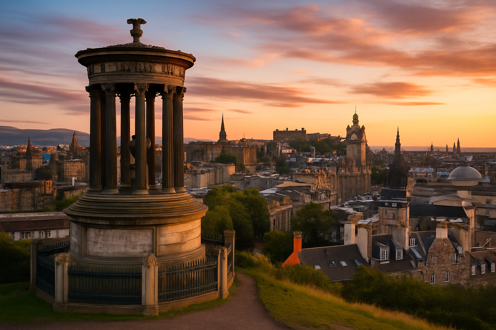
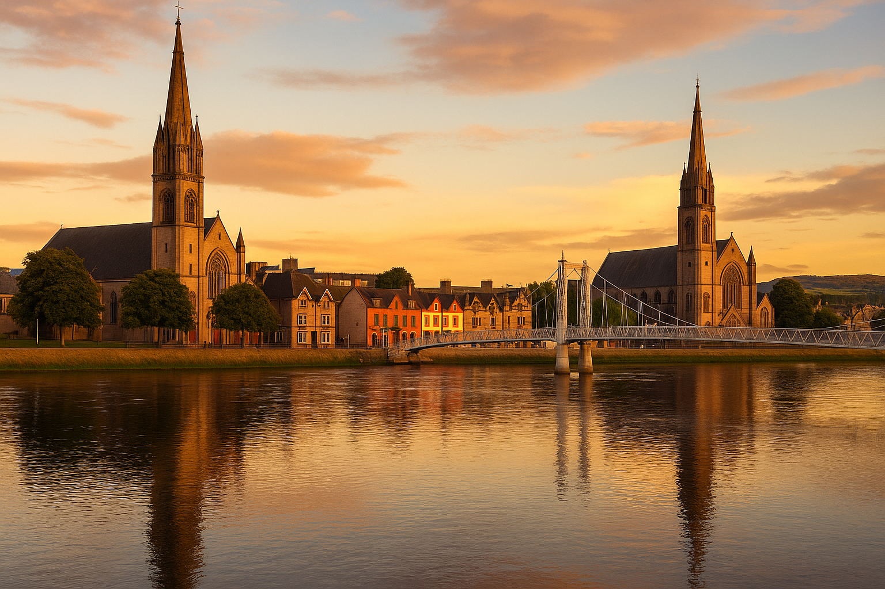

Travel Itineraries in Scotland

Edinburgh
A city of legends and landscapes. Wander through cobbled streets, explore medieval castles, and take in the dramatic views from Calton Hill. Edinburgh blends history, mystery, and beauty in every directi
Glasgow
Discover the vibrant spirit of Glasgow, where grand Victorian architecture meets modern Scottish culture. Wander through George Square, explore local art, and feel the pulse of a city full of history and heart.

Inverness
Escape to the Highland beauty of Inverness, where historic churches meet serene river views. Stroll across charming bridges and feel the calm rhythm of this picturesque Scottish gem.